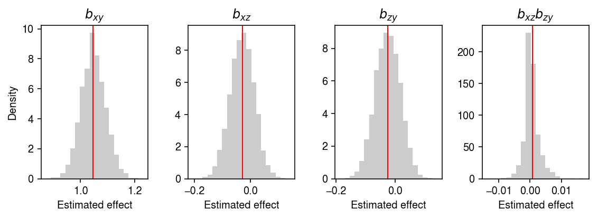
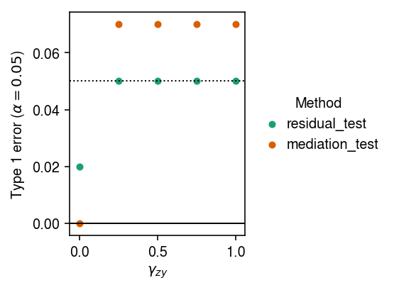
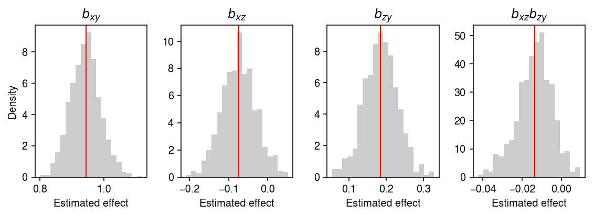
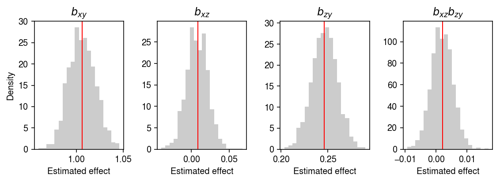
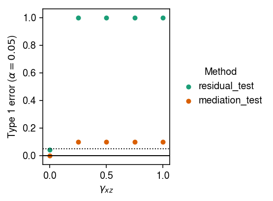

Causal mediation analysis
Table of Contents
Introduction
We are often interested in understanding the proportion of variation explained in a phenotype by some mediating variable. For example Pai et al. 2011 try to explain divergence in gene expression between species using divergence in DNA methylation, and Eres et al. 2019 try to explain it using divergence in chromatin interaction.
Here, we investigate the classical procedure (based on two-stage least squares) and the alternative approach of Pai et al. 2011 in simulation, trying to answer two questions:
- What is the alternative approach estimating?
- Can the classical approach be systematically biased downwards under violations of the assumptions?
We previously tried to prove that the alternative approach does not estimate the desired quantities. In (1), we investigate it empirically. Answering (2) matters for the interpretation of any empirical data analysis using the classical approach, because it is not possible to verify the assumptions hold in observational data (Pearl 2012).
Setup
import numpy as np import pandas as pd import scipy.linalg as sl import sklearn.linear_model as sklm
%matplotlib inline %config InlineBackend.figure_formats = set(['retina'])
import matplotlib.pyplot as plt plt.rcParams['figure.facecolor'] = 'w' plt.rcParams['font.family'] = 'Nimbus Sans'
Methods
Simulation
Simulate from a simple linear structural equation model.
\[ x = \mu_x + e_x \]
\[ z = x \gamma_{xz} + e_z \]
\[ y = x \gamma_{xy} + z \gamma_{zx} + e_y \]
def simulate(n, gamma_xz, gamma_zy, gamma_xy, seed): np.random.seed(seed) x = np.random.normal(size=n) z = x * gamma_xz + np.random.normal(size=n) z -= z.mean() y = x * gamma_xy + z * gamma_zy + np.random.normal(size=n) y -= y.mean() return x, z, y
Procedures
Implement the procedures.
def mediation_formula(x, z, y): """Mediation formula (Pearl 2009)""" b_xz = np.inner(x, z) / np.inner(x, x) design = np.vstack([x, z]).T b_xy, b_zy = sl.pinv(design).dot(y) return b_xy, b_xz, b_zy def mediation_test(x, z, y, atol=1e-8, n_bootstrap=5000, return_p=True): """Test b_xz b_zy = 0""" b_xy, b_xz, b_zy = mediation_formula(x, z, y) T0 = b_xz * b_zy B = bootstrap(mediation_formula, x, z, y, n_bootstrap) T = B[:,1] * B[:,2] if return_p: # Add tolerance around 0 if T0 > 0: return (T <= atol).mean() else: return (T >= -atol).mean() else: return (b_xy, b_xz, b_zy), T0, B def residual(x, z, y): """Procedure proposed in Pai et al. 2011""" b0 = np.inner(x, y) / np.inner(x, x) b1 = np.inner(z, y) / np.inner(z, z) yhat = y - z * b1 b2 = np.inner(yhat, x) / np.inner(x, x) return b0, b2 def residual_test(x, z, y, atol=1e-8, n_bootstrap=5000, return_p=True): b0, b2 = residual(x, z, y) T0 = b2 - b0 B = bootstrap(residual, x, z, y, n_bootstrap) T = B[:,1] - B[:,0] if return_p: # Add tolerance around 0 if T0 > 0: return (T <= atol).mean() else: return (T >= -atol).mean() else: return (b0, b2), T0, B def bootstrap(method, x, z, y, n_bootstrap): B = [] for _ in range(n_bootstrap): idx = np.random.choice(a=x.shape[0], size=x.shape[0]) B.append(method(x[idx], z[idx], y[idx])) return np.array(B)
Results
Null example
Generate an example dataset with no mediated effect.
x, z, y = simulate(n=500, gamma_xz=0, gamma_zy=0, gamma_xy=1, seed=3)
Apply the mediation formula (Pearl 2009; alternative derivation of Sobel test, Sobel 1982) to the simulated data.
gamma, T, B = mediation_test(x=x, z=z, y=y, method=mediation_formula, return_p=False) (B[:,1] * B[:,2] < 0).mean()
0.4064
Look at the bootstrap distribution of the estimates.
plt.clf() fig, ax = plt.subplots(1, 4) fig.set_size_inches(8, 3) ax[0].hist(B[:,0], bins=20, color='0.8', density=True) ax[0].set_title('$b_{xy}$') ax[0].axvline(x=gamma[0], c='r', lw=1) ax[1].hist(B[:,1], bins=20, color='0.8', density=True) ax[1].set_title('$b_{xz}$') ax[1].axvline(x=gamma[1], c='r', lw=1) ax[2].hist(B[:,2], bins=20, color='0.8', density=True) ax[2].set_title('$b_{zy}$') ax[2].axvline(x=gamma[2], c='r', lw=1) ax[3].hist(B[:,1] * B[:,2], bins=20, color='0.8', density=True) ax[3].set_title('$b_{xz}b_{zy}$') ax[3].axvline(x=gamma[1] * gamma[2], c='r', lw=1) for a in ax: a.set_xlabel('Estimated effect') ax[0].set_ylabel('Density') fig.tight_layout()

Apply the alternative procedure to the simulated data.
residual_test(x, z, y)
0.1828
Type 1 error under no pleiotropy
Fix \(\gamma_{xy} = 1, \gamma_{xz} = 0\). Estimate the type 1 error rate of the two procedures, varying \(\gamma_{zy}\).
def evaluate_null(n=500, n_bootstrap=1000, n_trials=10): result = [] for gamma_zy in np.linspace(0, 1, 5): for i in range(n_trials): x, z, y = simulate(n=n, gamma_xz=0, gamma_zy=gamma_zy, gamma_xy=1, seed=i) for method in [mediation_test, residual_test]: p = method(x, z, y, n_bootstrap=n_bootstrap, return_p=True) result.append(pd.Series({ 'gamma_zy': gamma_zy, 'trial': i, 'method': method.__name__, 'p': p })) return pd.DataFrame(result)
result = evaluate_null(n_trials=100) type_1_error = result.groupby(['method', 'gamma_zy'])['p'].agg(lambda x: (x < 0.05).mean()).reset_index()
Plot the results.
cm = plt.get_cmap('Dark2').colors plt.clf() plt.gcf().set_size_inches(4, 3) for i, method in enumerate(set(type_1_error['method'])): T = type_1_error.loc[type_1_error['method'] == method, ['gamma_zy', 'p']].values plt.scatter(T[:,0], T[:,1], c=cm[i], label=method, s=16) plt.legend(title='Method', frameon=False, bbox_to_anchor=(1, .5), loc='center left', handletextpad=0) plt.axhline(y=0, lw=1, c='k') plt.axhline(y=0.05, lw=1, ls=':', c='k') plt.xlabel('$\gamma_{zy}$') plt.ylabel(r'Type 1 error ($\alpha=0.05$)') plt.tight_layout()

Write out the results.
result.to_csv('/project2/mstephens/aksarkar/projects/singlecell-ideas/data/mediation/type-1-error-no-pleiotropy.txt.gz', sep='\t', compression='gzip')
Why did the mediation test fail for large \(\gamma_{yz}\)? Look at one example.
x, z, y = simulate(n=500, gamma_xz=0, gamma_zy=.25, gamma_xy=1, seed=31)
bhat, T0, B = mediation_test(x, z, y, n_bootstrap=1000, return_p=False)
plt.clf() fig, ax = plt.subplots(1, 4) fig.set_size_inches(8, 3) ax[0].hist(B[:,0], bins=20, color='0.8', density=True) ax[0].set_title('$b_{xy}$') ax[0].axvline(x=bhat[0], c='r', lw=1) ax[1].hist(B[:,1], bins=20, color='0.8', density=True) ax[1].set_title('$b_{xz}$') ax[1].axvline(x=bhat[1], c='r', lw=1) ax[2].hist(B[:,2], bins=20, color='0.8', density=True) ax[2].set_title('$b_{zy}$') ax[2].axvline(x=bhat[2], c='r', lw=1) ax[3].hist(B[:,1] * B[:,2], bins=20, color='0.8', density=True) ax[3].set_title('$b_{xz}b_{zy}$') ax[3].axvline(x=bhat[1] * bhat[2], c='r', lw=1) for a in ax: a.set_xlabel('Estimated effect') ax[0].set_ylabel('Density') fig.tight_layout()

Is this because of sampling noise? Look at a much larger sample.
x, z, y = simulate(n=5000, gamma_xz=0, gamma_zy=.25, gamma_xy=1, seed=31) bhat, T0, B = mediation_test(x, z, y, n_bootstrap=1000, return_p=False)
plt.clf() fig, ax = plt.subplots(1, 4) fig.set_size_inches(8, 3) ax[0].hist(B[:,0], bins=20, color='0.8', density=True) ax[0].set_title('$b_{xy}$') ax[0].axvline(x=bhat[0], c='r', lw=1) ax[1].hist(B[:,1], bins=20, color='0.8', density=True) ax[1].set_title('$b_{xz}$') ax[1].axvline(x=bhat[1], c='r', lw=1) ax[2].hist(B[:,2], bins=20, color='0.8', density=True) ax[2].set_title('$b_{zy}$') ax[2].axvline(x=bhat[2], c='r', lw=1) ax[3].hist(B[:,1] * B[:,2], bins=20, color='0.8', density=True) ax[3].set_title('$b_{xz}b_{zy}$') ax[3].axvline(x=bhat[1] * bhat[2], c='r', lw=1) for a in ax: a.set_xlabel('Estimated effect') ax[0].set_ylabel('Density') fig.tight_layout()

MacKinnon et al. 2010 demonstrate that many tests fail to control Type 1 error under the null chosen in this simulation.
Type 1 error under pleiotropy
Fix \(\gamma_{xy} = 1, \gamma_{zy} = 0\). Estimate the type 1 error rate of the two procedures, varying \(\gamma_{xz}\).
def evaluate_null_pleiotropy(n=500, n_bootstrap=1000, n_trials=10): result = [] for gamma_xz in np.linspace(0, 1, 5): for i in range(n_trials): x, z, y = simulate(n=n, gamma_xz=gamma_xz, gamma_zy=0, gamma_xy=1, seed=i) for method in [mediation_test, residual_test]: p = method(x, z, y, n_bootstrap=n_bootstrap, return_p=True) result.append(pd.Series({ 'gamma_xz': gamma_xz, 'trial': i, 'method': method.__name__, 'p': p })) return pd.DataFrame(result)
result = evaluate_null_pleiotropy(n_trials=50) type_1_error = result.groupby(['method', 'gamma_xz'])['p'].agg(lambda x: (x < 0.05).mean()).reset_index()
Plot the results.
cm = plt.get_cmap('Dark2').colors plt.clf() plt.gcf().set_size_inches(4, 3) for i, method in enumerate(set(type_1_error['method'])): T = type_1_error.loc[type_1_error['method'] == method, ['gamma_xz', 'p']].values plt.scatter(T[:,0], T[:,1], c=cm[i], label=method, s=16) plt.legend(title='Method', frameon=False, bbox_to_anchor=(1, .5), loc='center left', handletextpad=0) plt.axhline(y=0, lw=1, c='k') plt.axhline(y=0.05, lw=1, ls=':', c='k') plt.xlabel('$\gamma_{xz}$') plt.ylabel(r'Type 1 error ($\alpha=0.05$)') plt.tight_layout()

Why do both methods fail when \(\gamma_{xz} > 0\)? When \(\gamma_{xz} > 0\), \(\operatorname{corr}(x, z) > 0\), and the multiple regression in the Sobel test/mediation formula is ill-specified. For the same reason, residualizing \(z\) introduces a correlation between \(y\) and \(x\)
Mediation example
Generate an example dataset from the linear structural equations.
x, z, y = simulate(n=500, gamma_xz=1, gamma_zy=1, gamma_xy=1, seed=1)
Apply the Sobel test to the simulated data.
mediation_test(x, z, y)
0.0
Apply the alternative procedure to the simulated data.
residual_test(x, z, y)
0.0